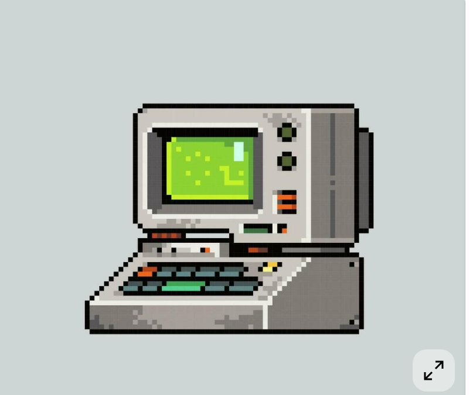

🖥 Your computer...
Your computer creates digital/binary data using 1s and 0s. To access the internet during the dial-up era, that data first had to leave your computer and travel through older telephone infrastructure.
They use the same frequency bands as voice calls, hence the interference when picking up the phone.
The problem was that telephone lines were designed for voice, not for direct computer data, so the signal had to be converted first.